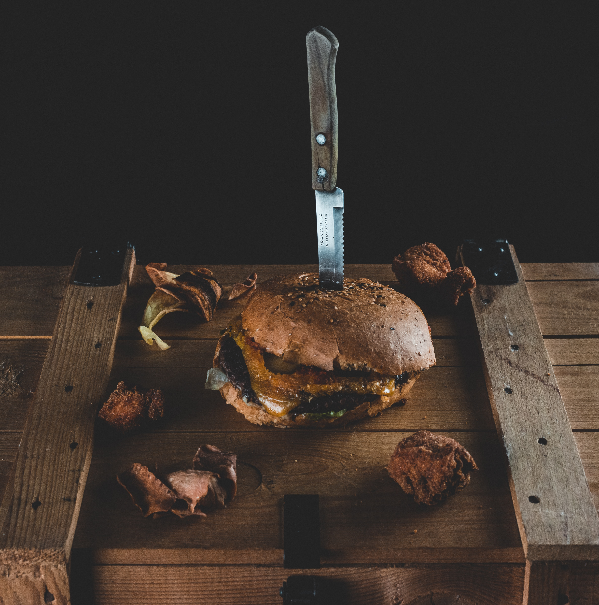

Mancys Bluewater
Seafood $$$
Taking you under the sea with an upscale atmosphere. Whether you’re indulging yourself in a multi-course meal or grabbing a seat at the bar it's ideal for dining with friends, family, and business associates.

Levi & Lilac's Whiskey Room
Bar $$
A lowkey place with high expectations. Isn’t much more you can ask for when sipping on a glass of whiskey in a charming historic building while being served a juicy burger. And don’t forget to grab your hangover cure in the morning at their coffee pub located across from the whiskey room.